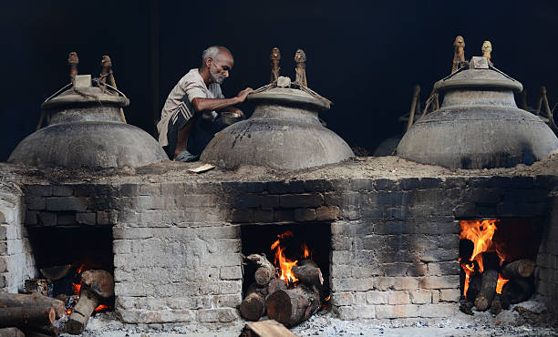
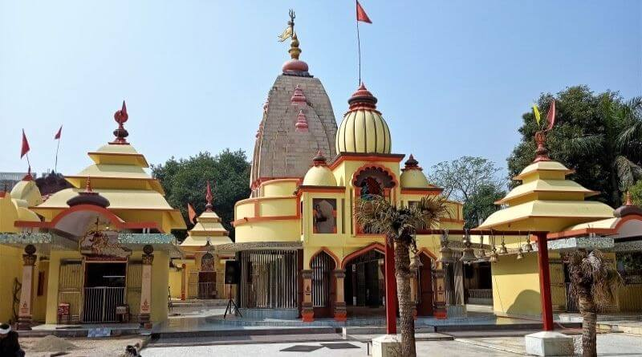

Welcome To Kannauj
DO COME & VISIT
"Kannauj once is not enough"
learn more"Kannauj once is not enough"
learn moreKannauj, the perfume capital of India, and the dying art of natural perfumery,Situated on the banks of the sacred River Ganges, 80 km from Kanpur in Uttar Pradesh ,well known in ancient time as 'Harsha Vardhan City'.Today it prides itself as the 'Attar City' or the perfume city of India or'perfume capital of india'.The best time to visit Kannauj is the winter months,between October and March. The temperature remains somewhere about 7-8 degree Celsius and the time is ideal for a visit as the weather remains pleasant in day time.
 